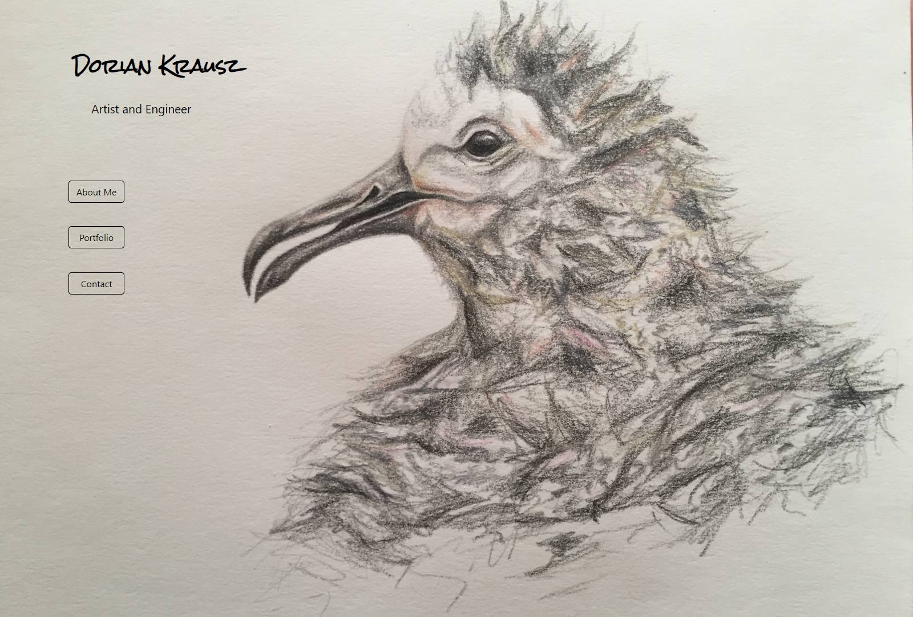
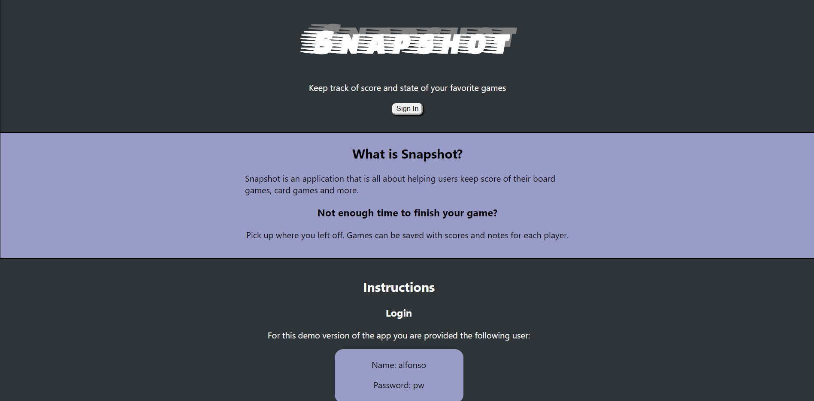
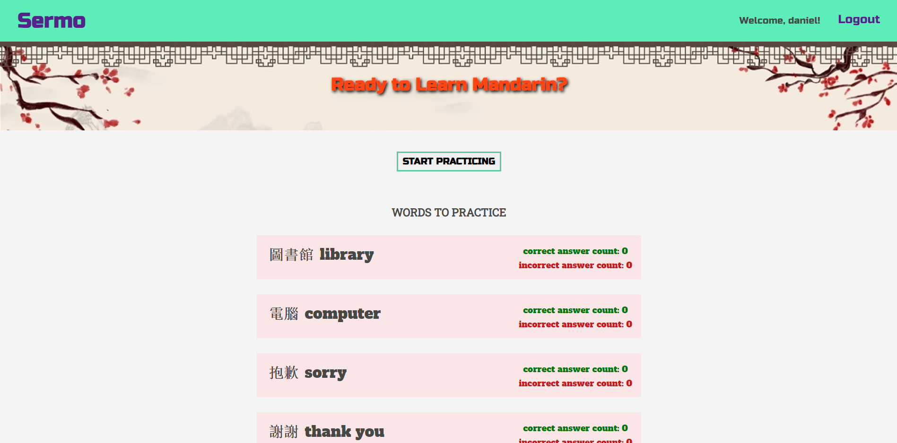
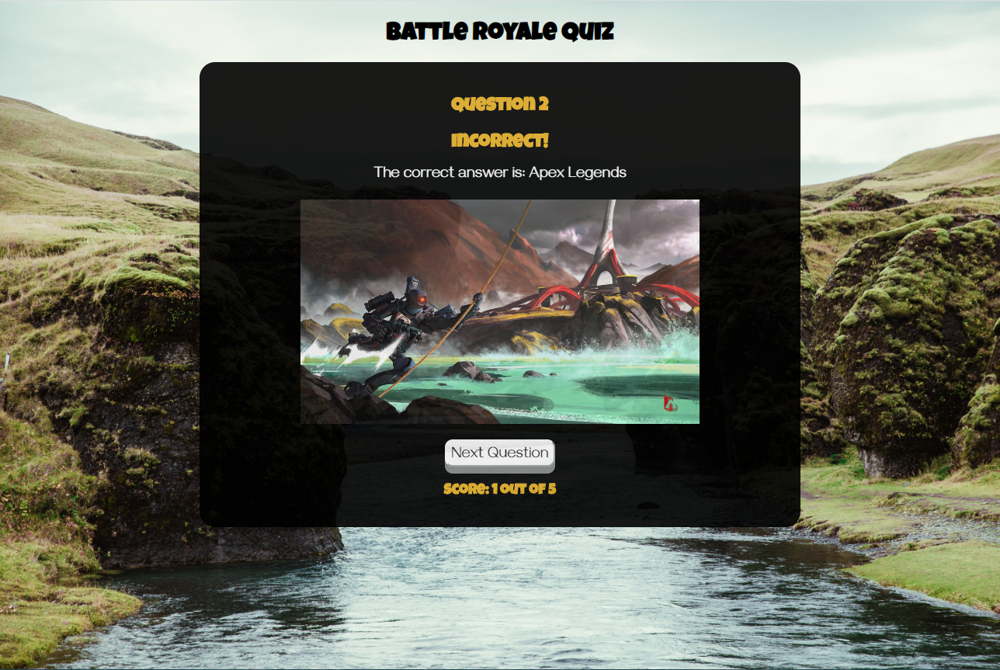

Daniel Fong
A Denver based frontend web developer
Currently honing skills at Thinkful to create accessible and attractive applications that captivate.
Projects
DorianKrausz.com

A frontend portfolio project completed in one week, with minor revisions since then. Showcases an artwork collection and the artist.
Snapshot

A full-stack solo application created in two weeks. Allows users to add players, games, and scores to keep track of physical (e.g. board and card) games.
Sermo

A full stack application completed with a pair in one week. Utilizes a spaced repetition algorithm to manipulate a linked list of words to teach the user Mandarin.
Bookmark Bungalow


Bring a slice of the tropics into your life with an app designed to save your favorite websites with a description, rating and link to the site itself. Bookmarks can be filtered by rating. Designed to fulfill a Thinkful curriculum requirement.
Battle Royale Quiz

Have you ever wondered if you have spent too much time playing games that are extremely hard to win? This quiz will answer that question as you test the depth of your knowledge of Battle Royale games ranging from the most prominent to the obscure. Designed to fulfill a Thinkful curriculum requirement.